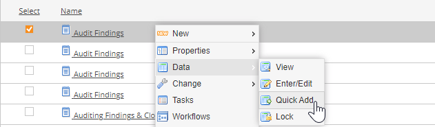
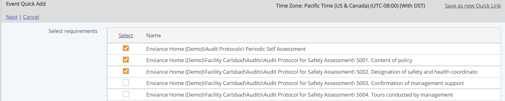
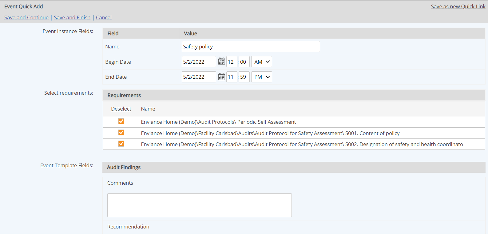

An event log may be used to log assessments and findings. When an Event Log is used for findings and assessments, the Quick Add mode of entering data should be used in order to group findings and assessments.
When events are created using Quick Add, findings are grouped by a common ID as one assessment for reporting purposes. The Issues/Findings per Assessment Aggregate Report can then be run to report on the results of assessments.
An optional ID Control field may be used on the Event Log to automatically increment the finding number for each event during entry. The counter must be reset to 1 for the first finding recorded for each new assessment.
Steps to create a Findings and Assessments Log:
To record assessment findings:
Select the assessments log in the Requirements view. Right click and select Data > Quick Add.

The requirements associated with the Event Log are shown.
Select all the requirements for which you want to create findings. (De-select those you do not need.)

Click Next.
An event form is displayed.
Complete the rest of the fields to document the finding.
One finding, with the same information, will be created for each requirement selected.

When you have created all the findings you need for the assessment, select Save and Finish.
A list of the events that were created are displayed.